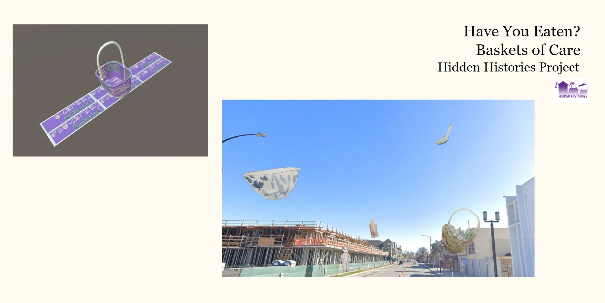
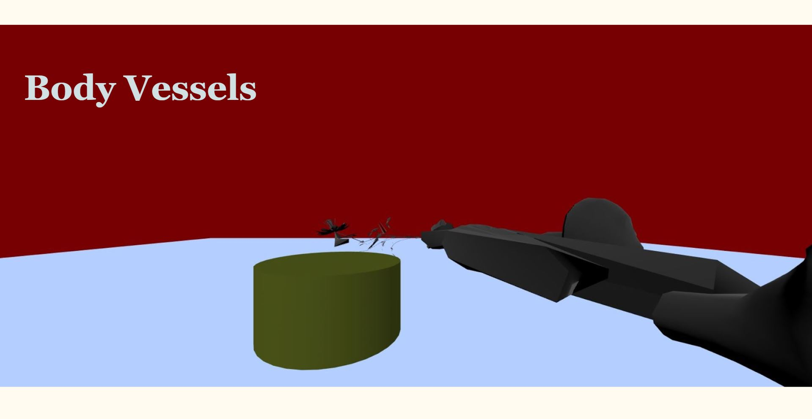
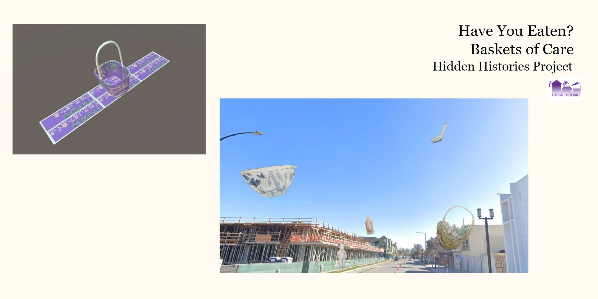
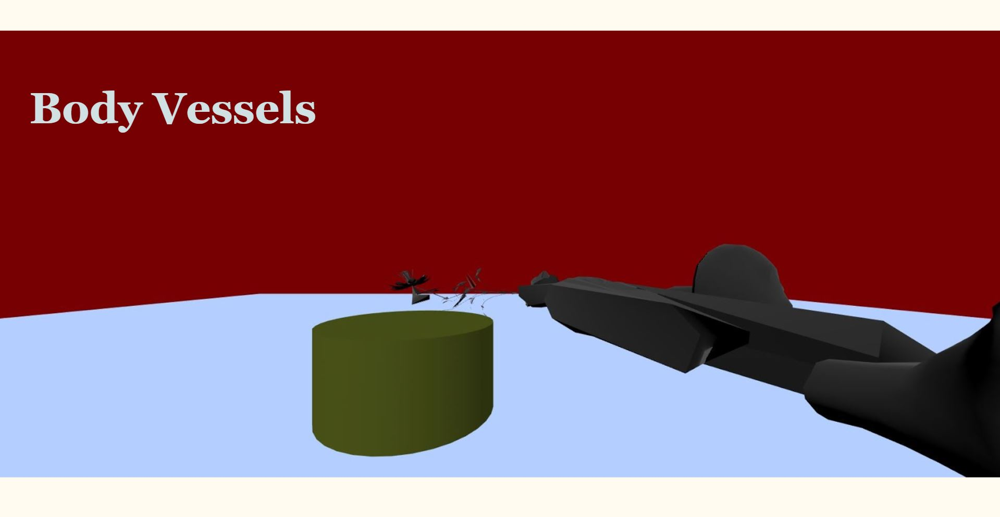

Sabrina Kwong is a rising senior that aspires to be a working artist and designer. Identifies as a first-generation college student, a Chinese American, and a learner. She works with traditional and digital mediums in order to understand the human condition and roles that technology plays in our world.
An artist, dancer, designer, teacher, and lover of stories. Sabrina is a rising senior with a BFA in Digital Media Arts from San Jose State University. She creates works of art that center around self identity, cultural upbringing, wellness, and the spaces between bodies with her never-ending learning of technology and traditional mediums.
Currently she is creating works of art targeted towards social issues and culutral awareness in hopes to for viwers to be mindful of how powerful one's voice and contributions are.
Working pieces that delve into the human experience, empathy, and call to action. Kwong is a firm believer of sunlight and joy to combat this strange world that we all live in.

 


